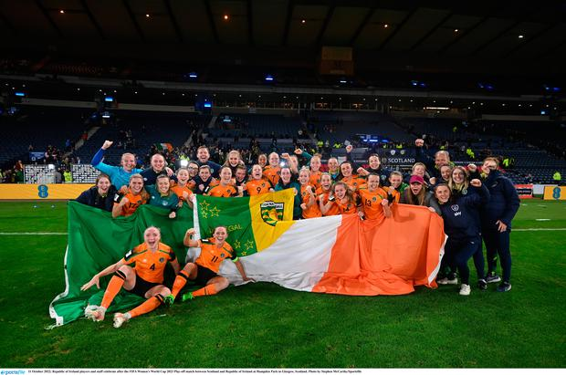

Our Womens Squad
- Goalkeepers
- Courtney Brosnan, Grace Moloney, Megan Walsh, Sophie Whitehouse
- Defenders
- Harriet Scott, Louise Quinn, Diane Caldwell, Jessie Stapleton, Aoife Mannion, Hayley Nolan, Claire O'Riordan, Tara O'Hanlon, Aine O'Gorman
- Midfielders
- Katie McCabe, Denise O'Sulivan, Megan Connolly, Ruesha Littlejohn, Ciara Grant, Roma McLaughlin, Lily Agg, Jamie Finn
- Forwards
- Heather Payne, Abbie Larkin, Amber Barrett, Kyra Carusa, Marissa Sheva, Alsnnsh McEvoy
Results and upcoming fixtures
| Date | Fixture | Result |
|---|---|---|
| 08/04/23 | USA v Ireland | 2-0 |
| 11/04/23 | USA v Ireland | 1-0 |
| 22/06/23 | Ireland v Zambia | TBA |
| 06/07/23 | Ireland v France | TBA |
| 07/09/23 | France v Ireland | TBA |
| 20/07/23 | Australia v Ireland | TBA |
| 26/07/23 | Canada v Ireland | TBA |
| 31/07/23 | Ireland v Nigeria | TBA |
FIFA World Cup 2023: Australia and New Zealand
Ireland's womens team have found themselves in fine form in the past couple of years. Thanks to the squads determination and Vera Pauw's management, they have qualified for the 2023 world cup being held in Australia and New Zealand. It came down to a play-off game against neighbours Scotland, where ended in a 1-0 victory. This is Ireland's first time qualifying for the world cup. The ladies have been playing a series of friendlies all over but more natbly the USA twice. The USA are holders of the world cup and look to defend their title this summer. Ireland Played well throughout the two fixtures, but ultimatly loss to the USA on both occasions, 2-0 and 1-0. You can watch the highlights to the second game here or read the match report here. The team shouldn't be discouraged, as they were playing the worlds best. They look forward to the tournament, where they play one of the hosts, Australia on the opening day. The play Canada in the following fixture. The group concludes when they play Nigeria and hopefully will be advancing to the knockout stages. The womens team have come on greatly over the past few years, with popularity and excitment building around the team. Crowds are growing at home games and the women are setting examples for young people all around the country.